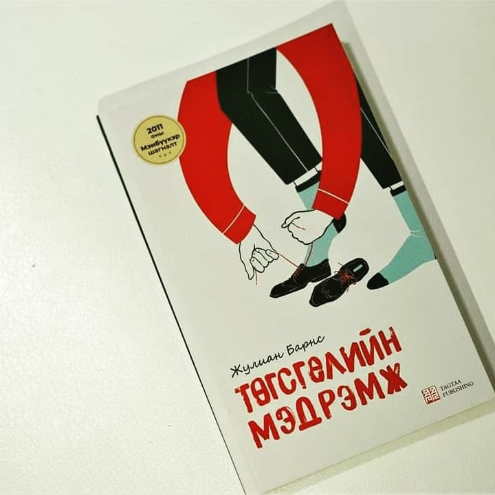

Хичээл болон ажлынхаа хажуугаар аль болох өөрийн дуртай зүйлүүдээ хийх цаг гаргахыг хичээдэг. Энэ цагтаа хийхийг хүсдэг номер нэг зүйл бол ууланд алхах. Цэвэр агаар, нам гүн байдалд тайвшрал өгөхөөс гадна спорт болдог сайхан талтай. Дараагийн зүйл бол ном унших, номын тэмдэглэл бичих. Миний хувьд ихэвчлэн автобус, нойл, хүлээлгийн танхим гээд газруудад уншихихад тааламжтай байдаг. Мөн өөрт номоос төрсөн мэдрэмжээ буулган бусадтай хуваалцах дуртай.
 Номыг уншихаас өмнө харах, уншсаны дараа харах хоёр шал өөр мэдрэмж өгдөг гэдэгтээ санал нийлэх үү? Эхлээд харахад урьд нь таарч байгаагүй, ааш аяг, зан араншинг нь мэдэхгүй үл таних хүн шиг. Харин уншсаны дараа бол хэзээ, хаана, юунд ямар хариу үйлдэл үзүүлдгийг нь андахгүй болсон найз шиг. Жулиан Барнс "Төгсгөлийн мэдрэмж" Энэ нэрийг уншаад яагаад ч юм өнгөрсөн амьдралаа эргэцүүлэн хоногоо тоолон суугаа хөгшин эрийн дүр зураг буусан ч уншиж дуусаад миний төсөөллөөс арай өөр болохыг ойлгосон юм. Тони Вебстер бол номын өгүүлэгч бөгөөд жар орчим насны эр. Өөрийнх нь хэлдгээр тэр бол зовлонгоос холуур тойрч, амар амгалан тайван байдлыг эмрхэмлэн адал явдал гэхээргүй ч бас зовлонтой ч биш нэгэн хэвийн амьдарсан хүн. Үхсэнийхээ дараа булшны чулуун дээрээ бичүүлдэг ч юм билүү гэх "Өдөр бүхэн ням гараг" гэдэг үг оносон гэлтэй. Тэр одоо амьдралд өөрийг нь гайхаж мэлрүүлэх зүйл үлдээгүй гэж бодно. Биднийг ухаан орсон цагаас хойш тохиосон үйл явдлын зарим нь мартагдаж зарим хэсэг нь дурсамж болон үлдэнэ. Тэдгээр дурсамжийг бид бий болсон цагаас нь амьдралынхаа туршид дахин дахин тоглуулдаг. Ингэхдээ болсон үйл явдлыг өөрсдийн харахыг хүссэн өнцгөөрөө харж нэг үзнэ, "хэрэв тэгсэн бол" гэж бодон хувилбарууд дэвшүүлж дахиад олон өөр өнцгүүдээс харж нэг үзнэ. Ингэсээр цаг хугацаа урсан өнгөрхөд бидний ой тоонд үлдсэн бүхэн үнэн эсэхийг өөрсдөө ч баталж чадахаа байдаг аж. Гэвч дурсамж нь үнэн бодит явдлаас тэс өөр байвал бол харамсалтай. Ялангуяа хэн нэгний амьдралд хамгийн буруутай үйлдлийг хийсэн, тэрнийгээ хэзээ ч эргүүлж, үр дагаврыг нь өөрчилж чадахгүйгээр барахгүй, уучлал эрэх боломж нь төгссөн байх нь гачлантай. Хүн буруу зүйл хийгээд түүнийгээ засаж залруулах боломжгүй болоод ирэхээр харуусал болдог юм шиг ээ. Харуусал тээсэн хүн жаргаж чадах уу? Харууслаас өөр хүний сэтгэлийг тарчлааж чадах мэдрэмж бий юу? Баярлах, гуних, ичих, эмээх, айх, догдлох, хайрлах, харамлах, зовох ... энэ бүхний төгсгөл харуусах. ...Үйлийн хуримтлал гэж буй. Хариуцлага ч гэж буй. Үүний цаана сэтгэлийн тарчлал гэж буй. Тэр тарчлаанд харин эх, адаг гэж үгүй билээ....